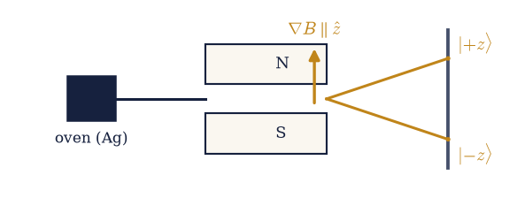
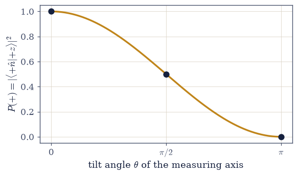
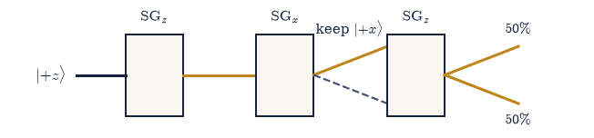
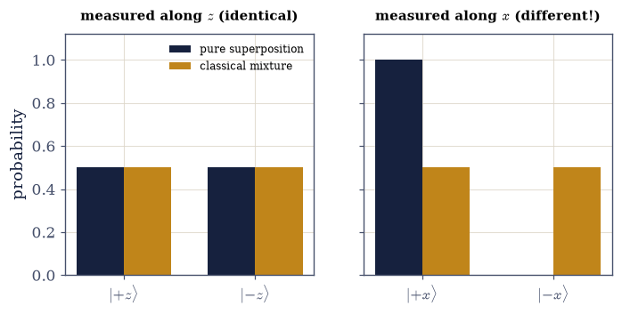

6.4 The Stern–Gerlach Experiment and the Birth of the Qubit#
Notebook overview#
Three notebooks of mathematics are behind us; this is the first of physics. And it begins, as the subject historically did, with a single experiment so simple it can be drawn in one line and so strange it forces the entire quantum framework into existence. A beam of silver atoms is sent through an inhomogeneous magnetic field. Classically the beam should smear into a continuous band. It does not: it splits into exactly two spots. From that one fact, and a second magnet rotated relative to the first, every counter-intuitive feature of quantum mechanics follows — quantization, superposition, the destructiveness of measurement, and the incompatibility of different observables.
The strategy of this notebook is to let the experiment do the forcing. We will not assume the rules of quantum mechanics and apply them; we will watch the data refuse every classical alternative until only one account is left standing — the one we built in Movement 0. A spin state is a vector in \(\mathbb{C}^2\); the atom that is “up along \(x\)” is a superposition of up and down along \(z\), not a classical mixture and not a hidden label; and a measurement projects the state onto the outcome it finds. The two-state system that emerges is at once the simplest quantum system, the electron spin, and the qubit of quantum information — and because its Hilbert space is just \(\mathbb{C}^2\), every computation here is a \(2\times2\) matter the formalism handles exactly.
A word on level and honesty. We use two rules in this notebook — that the probability of an outcome is \(|\langle e|\psi\rangle|^2\) (the Born rule), and that the state after a measurement is the eigenstate found (projection). We use them here because they make the experiment come out right, motivated entirely by the data; §6.5 elevates them to the postulates of quantum mechanics, stated as axioms. The spin operators \(S=(\hbar/2)\,\boldsymbol\sigma\) are previewed lightly — their full algebra and the uncertainty relation are §6.6 — and the curious half-angle \(\theta/2\) that appears throughout is flagged as the spin-\(\tfrac12\) signature behind the Bloch sphere (§6.8), noted but not developed.
Each exercise, as throughout Volume VI, opens with a crystal-clear statement and enumerated parts that name the exact operation — explicit two-component complex states, numpy.vdot
for amplitudes, numpy.abs(...)**2 for probabilities, numpy.random.default_rng for Born-rule
sampling. Here the mathematics is the easiest of the volume (\(2\times2\)); the difficulty is purely
conceptual, and it is guided with care, step by step.
How to read the checks. Each exercise closes with a
validatecall against an independent fact: the two spots as orthonormal spin eigenstates; the half-angle state and the mutually-unbiased bases (\(|\langle{+}z|{+}x\rangle|^2=\tfrac12\)); the projection law \(\cos^2(\theta/2)\); the sequential \(z\to x\to z\) chain resetting to \(50/50\); superposition and mixture agreeing on \(z\) but differing on \(x\); and Monte-Carlo Born sampling matching the predicted frequencies. A ✓ is strong evidence; a ✗ is a prompt to locate the discrepancy.Conventions and scope. We work in the \(z\)-basis \(\{|{+}z\rangle,|{-}z\rangle\}\) with \(\hbar=1\), so \(S_z=\tfrac12\sigma_z\) has eigenvalues \(\pm\tfrac12\) (physically \(\pm\hbar/2\)). The Born rule and projection are used here as the rules that fit the experiment; the formal postulates are §6.5, the Pauli algebra and uncertainty are §6.6, the dynamics is §6.7, and the Bloch-sphere geometry of the half-angle is §6.8. See Sakurai & Napolitano (§1.1); the Feynman Lectures Vol. III; and Notebooks §6.1 (states/amplitudes), §6.2 (observables), §6.3 (projectors).
Theory in brief#
The experiment and spatial quantization#
Silver atoms (one unpaired electron, a magnetic moment \(\propto\) spin) pass through a magnetic field with a gradient along \(z\). A classical moment would deflect by a continuous amount; instead the beam splits into exactly two spots. The observable \(S_z\) is quantized, with two values, and its eigenstates label an orthonormal basis of a two-dimensional Hilbert space,
States along any axis#
An apparatus oriented along the direction \((\theta,\varphi)\) measures spin along that axis, with “+” eigenstate
Note the half-angle \(\theta/2\) — a spin-\(\tfrac12\) signature, the reason a \(360^\circ\) rotation is not the identity (the Bloch sphere and the double cover, §6.8). The \(z\), \(x\), and \(y\) bases are mutually unbiased: an atom definite along one axis is exactly \(50/50\) along a perpendicular one, \(|\langle{+}z|{+}x\rangle|^2=\tfrac12\).
The projection (Born) rule, motivated by the data#
An atom prepared in \(|\psi\rangle\) and measured along an axis with “+” eigenstate \(|{+}\hat n\rangle\) comes out “+” with probability
After the measurement the atom is projected into the eigenstate found — measurement is destructive. We use this because it reproduces the experiment; §6.5 makes it the Born postulate.
The sequential Stern–Gerlach puzzle#
Chain three apparatuses. Select \(|{+}z\rangle\); measure along \(x\) (the atom emerges \(\pm x\) with probability \(\tfrac12\) each); keep \(|{+}x\rangle\); measure \(z\) again — and the atom is now \(50/50\), not \(100\%\) up,
The intervening \(x\)-measurement has destroyed the original \(z\)-information. No classical model in which each atom secretly carries definite \(z\)- and \(x\)-labels can reproduce this. This is incompatibility, made experimental (the algebra is §6.6).
Superposition is not a classical mixture#
The \(|{+}x\rangle\) atom is the superposition \((|{+}z\rangle+|{-}z\rangle)/\sqrt2\) — a definite state of \(S_x\), not an ignorance-mixture. The test:
with identical \(z\)-statistics. Superposition carries a phase a mixture lacks — the seed of the density matrix (§6.26).
The qubit#
The two-state system born here Eq. 513 is at once the electron spin and the qubit. Everything in Movement I lives in this \(\mathbb{C}^2\) setting; its geometry is the Bloch sphere (§6.8).
Setup#
Data only: the series palette, the conventions (\(\hbar=1\), amplitudes conjugate-first), and the
\(z\)-basis itself — the two beam spots \(|{\pm}z\rangle\) written as the standard basis vectors of
\(\mathbb{C}^2\), which is the one thing the experiment hands us rather than the notebook building
it. Nothing this notebook is about lives here. You write the state along an arbitrary axis,
spin_state Eq. 509, and the Born-rule probability, prob Eq. 510, in
Exercise 2 — the named states \(|{+}x\rangle\) and \(|{+}y\rangle\) are built there too, out of your
own spin_state — and the Born-rule sampler measure in Exercise 6. Randomness enters once, in
Exercise 6, which seeds its generator in view.
The Setup below holds this notebook’s data and instruments — nothing you are asked to build. It is collapsed so the building stays yours; expand it whenever you want the details.
Exercise 1 — The two-state system and spatial quantization#
The Stern–Gerlach beam splits into exactly two spots, and that single fact fixes the arena: two
outcomes, so two dimensions. The spots are labelled by the standard basis vectors of
\(\mathbb{C}^2\) Eq. 508, the KET_UP and KET_DOWN of the Setup, and everything the
picture claims about them is checkable. §6.2 established that a
Hermitian observable’s eigenvalues are the possible outcomes and its eigenvectors the states that
give them with certainty; here the observable measured is the spin along the field gradient,
\(S_z=\tfrac12\sigma_z\), and its eigenvalues must therefore be the \(\pm\tfrac12\) (physically
\(\pm\hbar/2\)) the two spots record.
Print the two spot labels \(|{+}z\rangle\) and \(|{-}z\rangle\) (
KET_UP,KET_DOWN).Verify orthonormality: \(\langle{+}z|{-}z\rangle =0\) and unit norms, with
numpy.vdot.Build \(S_z=\tfrac12\sigma_z\) (a \(2\times2\) array) and confirm with
numpy.allclosethatS_z @ KET_UPequals \(+\tfrac12\,\)KET_UPandS_z @ KET_DOWNequals \(-\tfrac12\,\)KET_DOWN— the two spots are its eigenstates.
|+z⟩ = [1. 0.], |−z⟩ = [0. 1.]
⟨+z|−z⟩ = 0+0j, orthonormal basis of ℂ²: True
S_z|+z⟩ = +½|+z⟩: True; S_z|−z⟩ = −½|−z⟩: True (eigenvalues ±ℏ/2)
Validation 1#
✓ the two beam spots are the orthonormal eigenstates |±z⟩ of the spin observable S_z, with eigenvalues ±ℏ/2
True

Fig. 514 The Stern–Gerlach apparatus. A beam of silver atoms leaves the oven and passes between the poles of a magnet whose field has a strong gradient \(\nabla B\parallel\hat z\). A classical magnetic moment would deflect by a continuous amount, smearing the beam into a band; instead it splits into exactly two spots on the screen. The spin observable \(S_z\) is quantized, and the two spots are its orthonormal eigenstates \(|{+}z\rangle\) and \(|{-}z\rangle\) (eigenvalues \(\pm\hbar/2\)). This single fact — two spots, not a smear — is the experimental seed of the two-dimensional Hilbert space.#
Exercise 2 — Spin along an arbitrary axis#
A magnet can be turned. Point it along the direction \((\theta,\varphi)\) and it measures the spin
component along that axis, whose “+” eigenstate is the superposition
\(|{+}\hat n\rangle=\cos\tfrac{\theta}{2}|{+}z\rangle+e^{i\varphi}\sin\tfrac{\theta}{2}|{-}z\rangle\)
Eq. 509 — note the half-angle \(\theta/2\), the spin-\(\tfrac12\) signature that will
reappear everywhere below. The probability of an outcome is the squared amplitude
Eq. 510, and by the convention of §6.1 an amplitude
\(\langle a|b\rangle\) is numpy.vdot(a, b), which conjugates its first argument. Those two
objects — the axis state and the Born probability — are the whole working vocabulary of this
notebook, so you write them here and use them in every exercise that follows. What they should
then say about the perpendicular axes is that the bases are mutually unbiased: an atom
definite along one axis is exactly \(50/50\) along any axis at right angles to it,
\(|\langle{+}z|{+}x\rangle|^2=\tfrac12\).
Write
spin_state(theta, phi=0.0), returning the two-component complex array \(\cos\tfrac{\theta}{2}|{+}z\rangle+e^{i\varphi}\sin\tfrac{\theta}{2}|{-}z\rangle\) of Eq. 509.Write
prob(plus, state), the Born-rule probability \(|\langle\text{plus}|\text{state}\rangle|^2\) of Eq. 510, asnumpy.abs(numpy.vdot(plus, state))**2.Confirm a state off both axes, say \((\theta,\varphi)=(1.1, 0.7)\), is normalized, \(\langle{+}\hat n|{+}\hat n\rangle=1\), with
numpy.vdot.Form \(|{+}x\rangle=\)
spin_state(numpy.pi/2, 0)and \(|{+}y\rangle=\)spin_state(numpy.pi/2, numpy.pi/2)— the named states the rest of the notebook uses — and compute \(|\langle{+}z|{+}x\rangle|^2\), \(|\langle{+}z|{+}y\rangle|^2\) and \(|\langle{+}x|{+}y\rangle|^2\) withprob; confirm all three are \(\tfrac12\).
|+n̂⟩ for (θ,φ)=(1.1,0.7): [0.853+0.j 0.4 +0.337j], norm² = 1.000000
|⟨+z|+x⟩|² = 0.5000, |⟨+z|+y⟩|² = 0.5000, |⟨+x|+y⟩|² = 0.5000 (all ½: mutually unbiased)
Validation 2#
✓ the spin state |+n̂⟩ = cos(θ/2)|+z⟩ + e^{iφ}sin(θ/2)|−z⟩ is normalized [got 1 vs expected 1 (rtol=1e-12, atol=1e-09)]
✓ the z-, x-, and y-bases are mutually unbiased — a definite atom along one axis is 50/50 along a perpendicular one [max|Δ| = 1.11022e-16 (rtol=1e-12, atol=1e-09)]
True
Exercise 3 — The projection law \(P(+)=\cos^2(\theta/2)\)#
Send a \(z\)-up atom into a magnet tilted by an angle \(\theta\) from \(z\) (in the \(x\)–\(z\) plane) and
the two objects of Exercise 2 already fix what happens: the tilted apparatus has “+” eigenstate
spin_state(theta, 0), and the Born rule Eq. 510 turns the overlap into a probability.
Carried out for every \(\theta\) at once, that is a single curve, and the curve has a closed form,
\(P(+)=\cos^2(\theta/2)\) — Malus’s law in quantum dress, with the half-angle where a classical
vector picture would put \(\theta\). Three of its values are worth naming in advance: \(1\) at
\(\theta=0\) (same axis, certain), \(\tfrac12\) at \(\theta=\pi/2\) (perpendicular, the mutually-unbiased
case), \(0\) at \(\theta=\pi\) (opposite axis, never). Nothing here is postulated — the rule is being
read straight off the experiment; §6.5 is where it becomes an axiom.
For each \(\theta\), build the tilted “+” eigenstate with the
spin_stateyou wrote in Exercise 2.Compute \(P(+)=|\langle{+}\hat n(\theta)|{+}z\rangle|^2\) with your Exercise 2
probover a grid of \(\theta\) fromnumpy.linspace(0, numpy.pi, ...).Compare against
numpy.cos(theta/2)**2withnumpy.allclose, and print the three landmark values.
P(+) = cos²(θ/2) across θ ∈ [0, π]: True
θ = 0.0000: P(+) = 1.0000
θ = 1.5708: P(+) = 0.5000
θ = 3.1416: P(+) = 0.0000
Validation 3#
✓ the projection probability for a z-up atom measured along a tilted axis is cos²(θ/2) [max|Δ| = 0 (rtol=1e-12, atol=1e-09)]
True

Fig. 515 The projection law. The probability that a \(z\)-up atom registers “+” when measured along an axis tilted by \(\theta\) is \(P(+)=\cos^2(\theta/2)\) (amber), with the three landmark values marked (dots): certain at \(\theta=0\) (same axis), an even \(\tfrac12\) at \(\theta=\pi/2\) (perpendicular — the mutually-unbiased case), and impossible at \(\theta=\pi\) (opposite axis). The half-angle is the spin-\(\tfrac12\) signature: the amplitude \(\cos(\theta/2)\) returns to itself only after a \(4\pi\) turn of \(\theta\) — it flips sign at \(2\pi\), though the probability already recurs there — the hallmark of the double cover behind the Bloch sphere (§6.8). This curve is the Born rule, here read directly off the experiment.#
Exercise 4 — The sequential Stern–Gerlach experiment#
Three magnets in a row are enough to break every classical picture at once Eq. 511. Select a \(|{+}z\rangle\) atom, send it through an \(x\)-apparatus and keep only the \(|{+}x\rangle\) output — the second rule we are using says the kept atom really is \(|{+}x\rangle\) afterwards, because measurement projects onto the outcome found — then measure \(z\) one final time. If each atom secretly carried definite \(z\)- and \(x\)-labels, the final \(z\)-measurement could only re-read the label the first magnet already sorted on, and every atom would come out up. The right control for the comparison is the same chain with the middle magnet removed, \(z\to z\) directly, which does stay \(100\%\) up.
Start in \(|{+}z\rangle\) (
KET_UP) and measure along \(x\): compute \(P({+}x)\) with theproband \(|{+}x\rangle\) of Exercise 2, and project onto the kept output.Measure along \(z\) on that projected state: compute \(P({+}z)\) and \(P({-}z)\) from
KET_X_PLUS.Contrast with measuring \(z\) directly on \(|{+}z\rangle\), \(P({+}z)=\)
prob(KET_UP, KET_UP), and say which of the two protocols still knows the atom is up.
|+z⟩ measured along x: P(+x) = 0.500 → keep |+x⟩
that |+x⟩ measured along z: P(+z) = 0.500, P(−z) = 0.500
contrast — |+z⟩ measured directly along z: P(+z) = 1.000
→ the intervening x-measurement reset the z-distribution: measurement disturbs.
Validation 4#
✓ an intervening x-measurement resets the z-distribution to 50/50, whereas z→z stays 100% up — measurement disturbs incompatible observables [max|Δ| = 1.11022e-16 (rtol=1e-12, atol=1e-09)]
True

Fig. 516 The sequential Stern–Gerlach puzzle. A \(|{+}z\rangle\) atom is selected, sent through an \(x\)-magnet (emerging \(|{+}x\rangle\) or \(|{-}x\rangle\) with probability \(\tfrac12\) each; we keep \(|{+}x\rangle\) and discard the dashed branch), then measured along \(z\) once more — where it now splits \(50/50\), not \(100\%\) up. The intervening \(x\)-measurement has erased the original \(z\)-information. No classical picture in which each atom secretly carries definite \(z\)- and \(x\)-labels can reproduce this: measuring one spin component disturbs the other. This is incompatibility, made experimental (the algebra is §6.6).#
Exercise 5 — Superposition versus classical mixture#
The obvious classical retreat is to say that \(|{+}x\rangle\) means “half the atoms are up, half are down, and we simply do not know which” — a \(50/50\) classical mixture of \(|{+}z\rangle\) and \(|{-}z\rangle\) rather than the superposition \((|{+}z\rangle+|{-}z\rangle)/\sqrt2\). Along \(z\) the retreat is safe: the mixture gives \(\tfrac12,\tfrac12\) by construction, half the atoms being \(|{+}z\rangle\) and half \(|{-}z\rangle\), and so does the superposition. The two accounts are distinguished only by turning the analyser, because a mixture’s predictions average over branches while a superposition’s add amplitudes first, and the relative phase between them survives the rotation Eq. 512.
For the pure \(|{+}x\rangle\) (
KET_X_PLUSof Exercise 2), compute the \(z\)-statistics \(P({\pm}z)\) with yourprob, and show they match the mixture’s \(\tfrac12,\tfrac12\).Compute the \(x\)-statistics of both: \(P({+}x)=\)
prob(KET_X_PLUS, KET_X_PLUS)for the pure state, and for the mixture the branch average \(\tfrac12\,\)prob(KET_X_PLUS, KET_UP)\(+\tfrac12\,\)prob(KET_X_PLUS, KET_DOWN).Say which basis settles it, and what the superposition carries that the mixture lacks (the seed of the density matrix, §6.26).
z-statistics: pure |+x⟩ → (np.float64(0.5), np.float64(0.5)), mixture → (0.5, 0.5) (identical)
x-statistics: pure P(+x) = 1.000, mixture P(+x) = 0.500 (different!)
→ superposition is a definite state of S_x, not ignorance: it carries a phase the mixture lacks.
Validation 5#
✓ a superposition and a classical mixture share z-statistics but differ on x (P(+x)=1 vs ½) — superposition is not ignorance [max|Δ| = 0 (rtol=1e-12, atol=1e-09)]
True

Fig. 517 Superposition is not a mixture. The pure superposition \(|{+}x\rangle=(|{+}z\rangle+|{-}z\rangle)/\sqrt2\) (ink) and a \(50/50\) classical mixture of \(|{+}z\rangle\) and \(|{-}z\rangle\) (amber) give identical \(z\)-statistics (left: both \(\tfrac12,\tfrac12\)) — measured along \(z\) they are indistinguishable. But along \(x\) (right) they part company completely: the superposition is certainly \(|{+}x\rangle\) (\(P({+}x)=1\)), while the mixture is still \(50/50\). The superposition carries a definite relative phase that a mixture, being mere ignorance, does not. This difference is the whole quantum/classical boundary and the seed of the density matrix (§6.26).#
Exercise 6 — Simulating the apparatus: Born-rule Monte Carlo#
So far we have computed the Stern–Gerlach probabilities; a real apparatus does not compute them,
it deals out one atom at a time. Reproducing that means sampling: each atom leaves “+” with
probability \(p=|\langle{+}\hat n|\psi\rangle|^2\) Eq. 510 and “−” otherwise, and is
projected into the eigenstate found, so a run of \(n\) atoms is \(n\) Bernoulli draws against \(p\) —
rng.random(n) < p, the Monte-Carlo spine of Volume V transplanted into a quantum setting. The
empirical frequency is then an estimate of \(p\) with the usual sampling error \(\sim1/\sqrt n\),
which at \(n=2\times10^5\) is a couple of parts in a thousand: close enough to check the Born rule,
far enough from exact to remind us it is a statistical claim about ensembles and never about one
atom.
Write
measure(state, plus, n, rng): it takes \(p\) from your Exercise 2prob, draws \(n\) outcomes withrng.random(n) < p, and returns the empirical “+” frequency together with the exact \(p\) for comparison. Write this one yourself — the implementation is the lesson.Create a generator with
numpy.random.default_rng(42)and send \(n=200{,}000\) atoms.Run the \(z\to x\) step (a \(|{+}z\rangle\) atom measured along \(x\)) and the \(x\to z\) step (a \(|{+}x\rangle\) atom measured along \(z\)) through it.
Confirm each frequency matches its probability to within the sampling error \(\sim 1/\sqrt{n}\).
z→x: Monte-Carlo frequency = 0.4999, Born probability = 0.5000
x→z: Monte-Carlo frequency = 0.5005, Born probability = 0.5000
sampling error ~ 1/√n = 2.24e-03
Validation 6#
✓ Monte-Carlo sampling of the Born rule reproduces the predicted Stern–Gerlach frequencies [max|Δ| = 0.000455 (rtol=1e-06, atol=0.01)]
True
Exercise 7 — A three-axis chain and the cost of looking (student)#
Looking costs something, and the cost can be measured — then turned into a tool. Start from \(|{+}z\rangle\) and ask how much “\(z\)-up” survives two protocols: A measures \(z\) directly, while B measures \(x\) first and only then \(z\) Eq. 511. That is the cost. The tool is what happens when the looking is gentle. Tilt the analyser in \(N\) equal steps from \(\theta=0\) to \(\theta=\pi\), keeping the “+” output each time: each step rotates the axis by only \(\Delta\theta=\pi/N\), so by the projection law of Exercise 3 each projection succeeds with probability \(\cos^2(\Delta\theta/2)\), and surviving all \(N\) of them — which leaves the atom in \(|{-}z\rangle\), upside down — has probability \([\cos^2(\pi/2N)]^N\) Eq. 510. A single violent flip (\(N=1\)) essentially never works; the question is what many gentle ones do, and the answer is the first glimpse of the quantum Zeno idea: measurement is not passive, it steers.
Compute the survival of \(z\)-up under both protocols — \(P({+}z)=\)
prob(KET_UP, KET_UP)for A, and \(P({+}z)=\)prob(KET_UP, KET_X_PLUS)for B, using your Exercise 2prob— and compare them.Evaluate \([\cos^2(\pi/2N)]^N\) with
numpy.cosfor a range of \(N\) (e.g.numpy.array([1, 2, 5, 20, 100])).Confirm the steering probability rises toward \(1\) as \(N\) grows, and say what that means for the atom’s spin.
survival of z-up: protocol A (z direct) = 1.000, protocol B (x then z) = 0.500
N = 1 rotated measurements: P(end in |−z⟩) = 0.0000
N = 2 rotated measurements: P(end in |−z⟩) = 0.2500
N = 5 rotated measurements: P(end in |−z⟩) = 0.6054
N = 20 rotated measurements: P(end in |−z⟩) = 0.8838
N = 100 rotated measurements: P(end in |−z⟩) = 0.9756
→ as N grows the state is dragged from |+z⟩ to |−z⟩ with probability → 1: measurement steers.
Validation 7#
✓ protocol B (an intervening x-measurement) destroys z-up information that protocol A (z direct) preserves
✓ a chain of N gentle rotated measurements steers |+z⟩ toward |−z⟩, with success → 1 as N grows — measurement actively changes the state
True
Exercise 8 — One experiment, the whole theory (synthesis)#
A beam splitting in two told us that spin is quantized — the observable \(S_z\) has two values, and its eigenstates span a two-dimensional Hilbert space. A second, rotated magnet told us that measurements of different spin components are incompatible: looking along \(x\) erases what we knew along \(z\), and no model in which each atom secretly carries definite labels can reproduce the \(50/50\) reset. And the only account that fits is the one Movement 0 built — a state is a vector in \(\mathbb{C}^2\), “up along \(x\)” is a superposition of up and down along \(z\) (not a mixture, not a hidden label, as its \(x\)-statistics prove), and measurement projects. The two-state system we have met is the electron spin and the qubit, and it is the arena for all of Movement I.
There is no new computation to do here: the lesson is the result. We did not assume quantum mechanics and apply it — we watched an experiment refuse every classical alternative and back us into it. The strangeness is not an artefact of the formalism; it is in the data, and the formalism is simply what survives. The next notebook (§6.5) takes the two rules we used here — outcomes drawn with probability \(|\langle e|\psi\rangle|^2\), and the state projected onto the outcome found — and states them, with the rest, as the postulates of quantum mechanics, once and for all.
Notebook summary#
The first physics of Volume VI: one experiment that forces the whole framework, in the smallest Hilbert space.
Spatial quantization Eq. 508: the beam splits into two, so \(S_z\) is quantized; the two spots are the orthonormal eigenstates \(|{\pm}z\rangle\) (eigenvalues \(\pm\hbar/2\)).
States along any axis Eq. 509: \(|{+}\hat n\rangle=\cos\tfrac{\theta}{2}|{+}z\rangle+ e^{i\varphi}\sin\tfrac{\theta}{2}|{-}z\rangle\), with the spin-\(\tfrac12\) half-angle; \(z,x,y\) are mutually unbiased (\(|\langle{+}z|{+}x\rangle|^2=\tfrac12\)).
The projection (Born) rule Eq. 510: \(P(+)=|\langle{+}\hat n|\psi\rangle|^2\), giving \(\cos^2(\theta/2)\) for a \(z\)-up atom — the rule that fits the data (the postulate is §6.5).
The sequential puzzle Eq. 511: \(z\to x\to z\) resets to \(50/50\) while \(z\to z\) stays definite — measurement disturbs incompatible observables. No hidden-label model survives.
Superposition \(\ne\) mixture Eq. 512: identical \(z\)-statistics, \(P({+}x)=1\) vs \(\tfrac12\) on \(x\) — superposition carries a phase ignorance lacks (the density matrix, §6.26).
Born-rule Monte Carlo: sampling outcomes with
numpy.random.default_rngreproduces the predicted frequencies — we can run the apparatus, not just solve it.
The two-state system born here is the spin and the qubit. We did not assume quantum mechanics; the experiment forced it. The next notebook makes the rules we used into postulates.
Outlook#
The postulates of quantum mechanics (§6.5): states, observables, the Born rule, and measurement/projection, stated as axioms — the rules of this notebook made formal.
The Pauli algebra and the uncertainty relation (§6.6): the commutators behind the incompatibility seen here, and the bound it implies.
Time evolution (§6.7): spin precession and Rabi oscillations, the qubit set in motion.
The Bloch sphere (§6.8): the geometry of the qubit, where the half-angle \(\theta/2\) becomes a point on a sphere and the double cover is made visible.
Superposition versus mixture, made formal: the density matrix (§6.26).
Cross-reference §6.1 (states/amplitudes), §6.2 (observables/eigenvalues), §6.3 (projectors), and forward to §6.5, §6.6, §6.7, §6.8, §6.26.